塑造面向未来的全球公民
Shaping Future-Ready Citizens
通过全方位的素养教育生态系统，跨越传统学术教育与真实世界成功之间的鸿沟。
Redefining K-12 education through a holistic competency-based ecosystem bridging academics and real-world success.
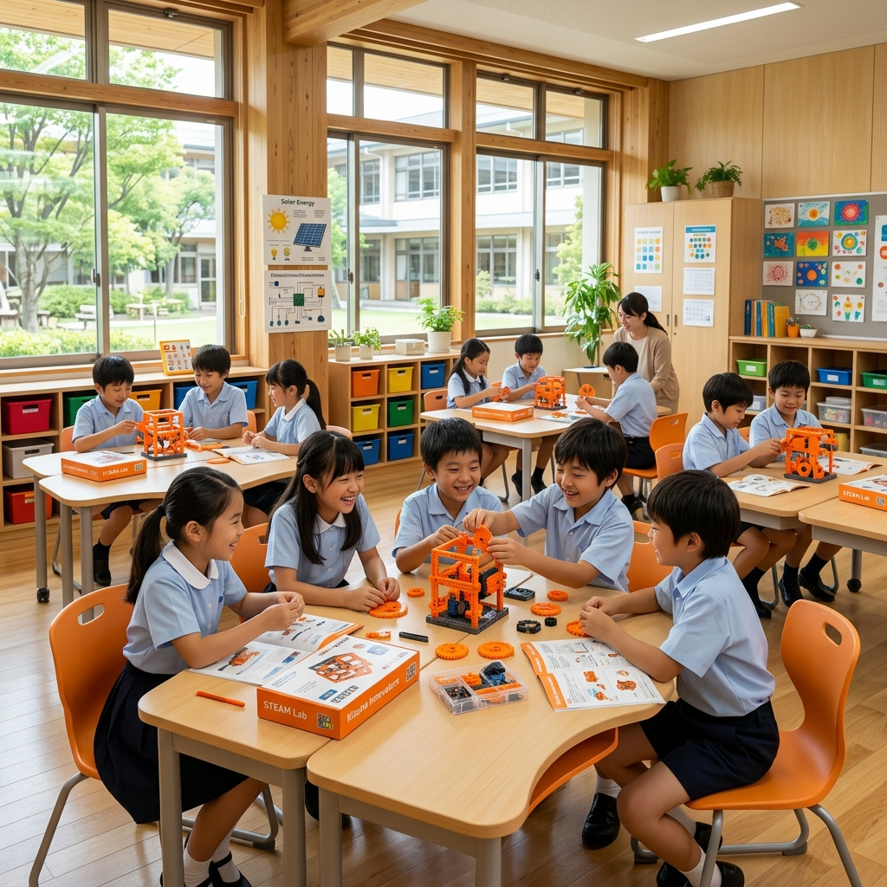
现代教育的破局之道：传统学术教育为何不再足够？
The Paradox of Modern Education: Why Traditional Academics Are Not Enough
⚠️ AI时代的冲击 ⚠️ The AI Revolution
死记硬背正在失去价值。未来的职场更需要批判思维、创造力和适应力。
Rote memorization is losing value. Tomorrow's leaders need critical thinking and adaptability.
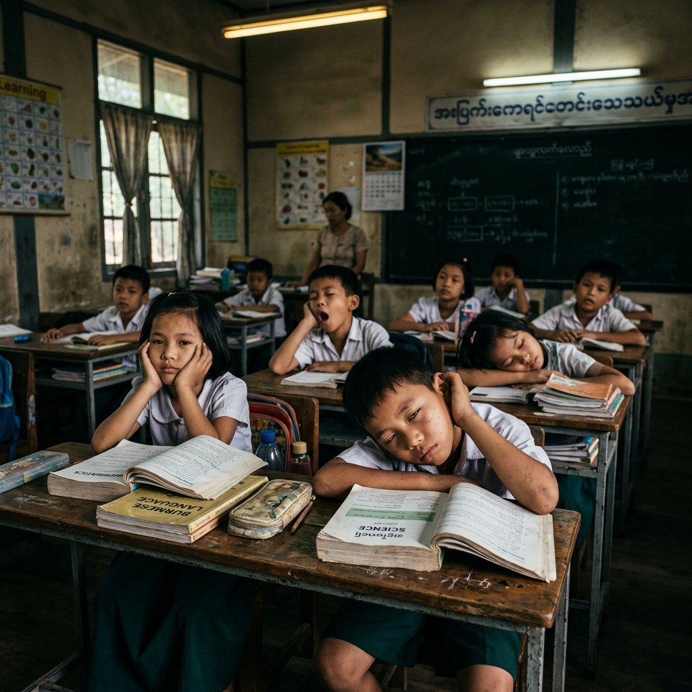
🚨 学习动力危机 🚨 The Engagement Crisis
传统课本偏重抽象理论，学生难以建立现实连接，导致学习投入度急剧下降。
Abstract textbook theories cause low engagement and drop-off in active curiosity.
💆 教师重负与倦怠 🚨 The Teacher Burnout
素质教育要求引入校本特色课，一线教师缺乏标准化教案，备课负担极重。
Without turnkey tools, teachers spend 3+ hours daily searching and designing lesson slides.
💡 核心问题： 学校如何在不增加教师负担的前提下，无缝融入实用生活技能与未来素养？
💡 Key Question: How can schools seamlessly integrate life skills and future competencies without overwhelming teachers?
Novastars 六大支柱生态系统：让素养教育落地生根
The Novastars 6-Pillar Ecosystem: Making Competency Education Scalable
全校级交钥匙解决方案，保证高品质教学的同时，大幅减轻教师负担，打通学校与家庭。
A turnkey solution that works school-wide, ensuring high-quality delivery without teacher burnout.
1. 科学的课程路径1. Researched Curriculum
基础与专题应用双轨课程。Foundation and Applied modules.
2. 互动学生资源2. Student Resources
实物绘本与《素养实践手卷》。Hands-on kits & workbooks.
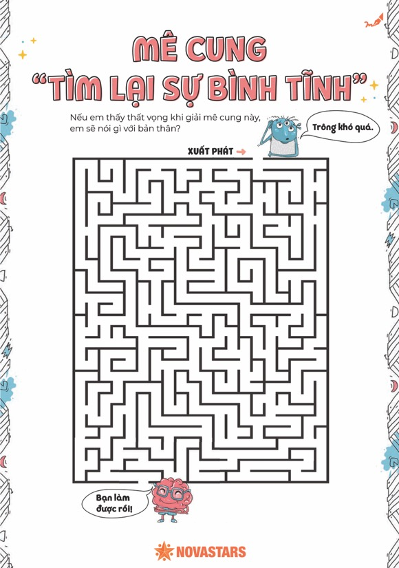
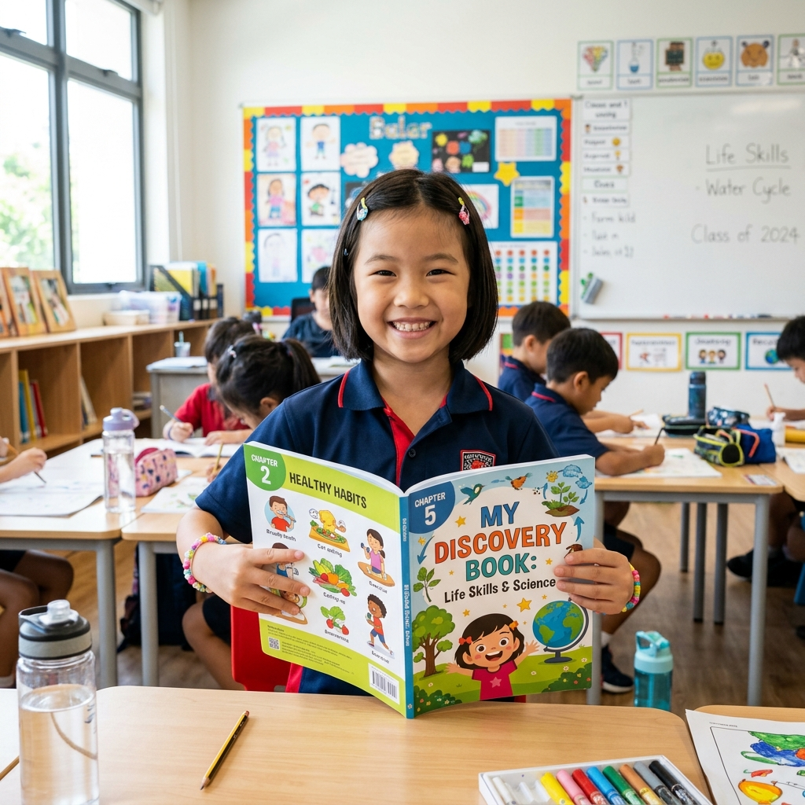
3. 一站式教师平台3. Teacher Portal
动态课件与逐字稿，零负担上课。Zero-prep guides and slides.
4. 持续的专业发展4. Professional Dev
乐高与剑桥团队主导的师资工作坊。Instructional coaching workshops.
5. 数据驱动评估5. Data Assessment
表现性评量，记录行为变化。Rubrics monitoring progress.
6. 家校共育系统6. Parent System
派发亲子卡，延展至家庭环境。Bespoke home-learning extensions.
做中学：体验式学习与主动探究闭环
The Experiential Learning Cycle: From Classroom to Real World
教学融合： 深度融合 乐高教育 (LEGO 4C) 与 剑桥大学 (Cambridge Active Learning) 框架，让学生成为探究的主角。
Pedagogical Fusion: Integrates the LEGO Education 4C and Cambridge Active Learning Frameworks.
参与 (Engage)Engage
探索 (Explore)Explore
引导探究式讨论Facilitated discussion
阐释 (Explain)Explain
梳理核心方法Actionable steps
拓展 (Elaborate)Elaborate
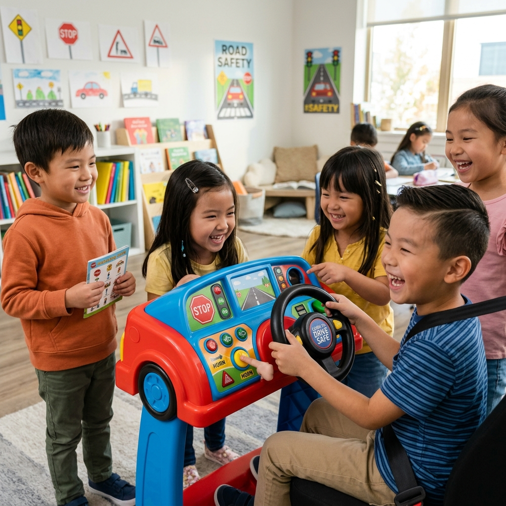
评估 (Evaluate)Evaluate
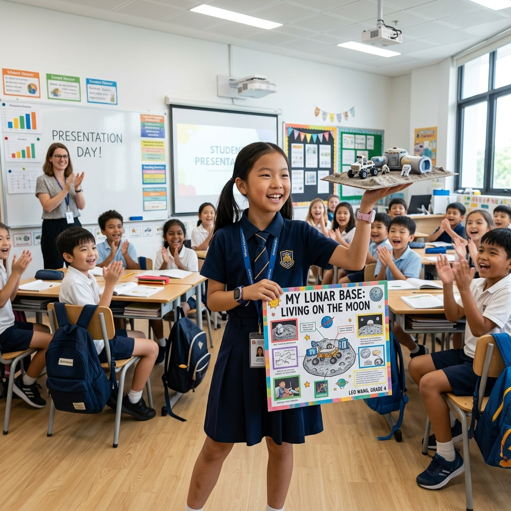
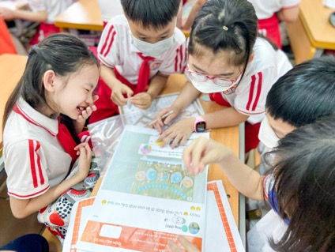
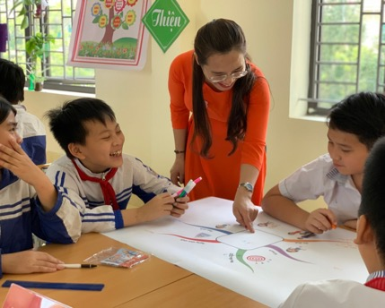
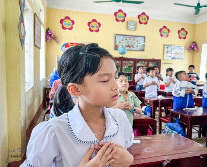
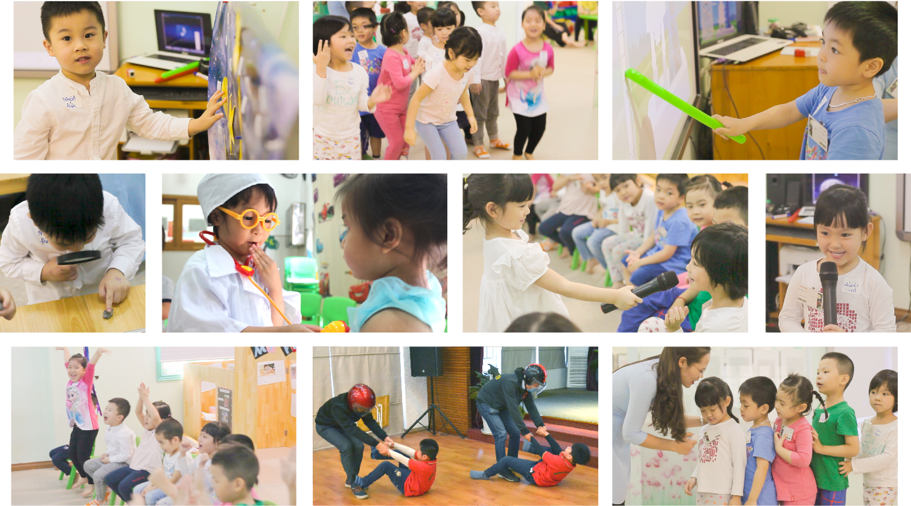
双轨制课程路径 & 核心素养提升
Dual-Track Pathway & Competency Matrix
🌱 基础素养 (Foundation Track) 🌱 Foundation Track
逻辑推理、表达沟通、情绪调节、团队协作。
Logical reasoning, communication, emotional regulation.
🛡️ 专题应用素养 (Applied Safety Modules) 🛡️ Applied Safety Modules
锁闭车内逃生、防拐骗防绑架、水域自救、火灾应急演练。
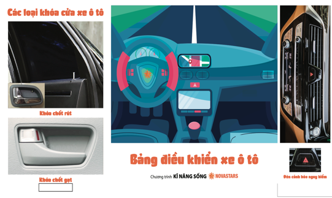
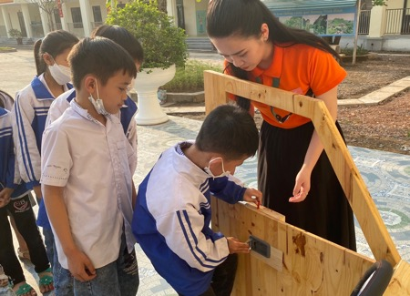
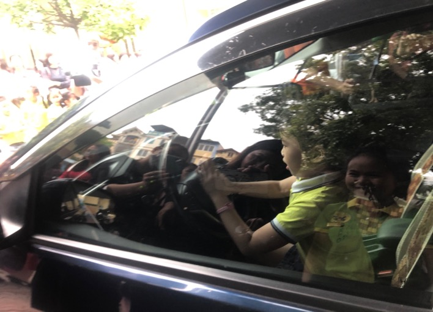
📊 学习前后核心素养提升对比 📊 Core Competencies Growth Metric
一学年后学生在 5 大维度的行为可观察增长：
Observable student growth after 1 year:
数字化教研生态：赋能教师，降低门槛
Intelligent Digital Platform: Empowering Teachers, Lowering Barriers
🚀 极简备课系统 (Zero-Prep Plans)🚀 Zero-Prep Lesson Plans
动态白板课件、教师讲授逐字稿、教具指引，零经验教师轻松上手。 Interactive slides and scripts designed to eliminate prep strain.
🤖 AI 评估与家校系统 (AI Insights & Parent Portal)🤖 AI Insights & Parent Portal
智能生成表现性评估报告与亲子共读信，打造家校闭环。 Automated progress reports and parent extension activities.
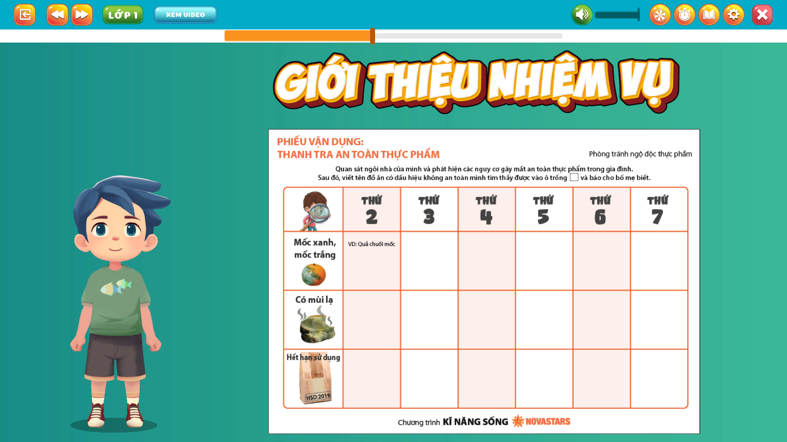
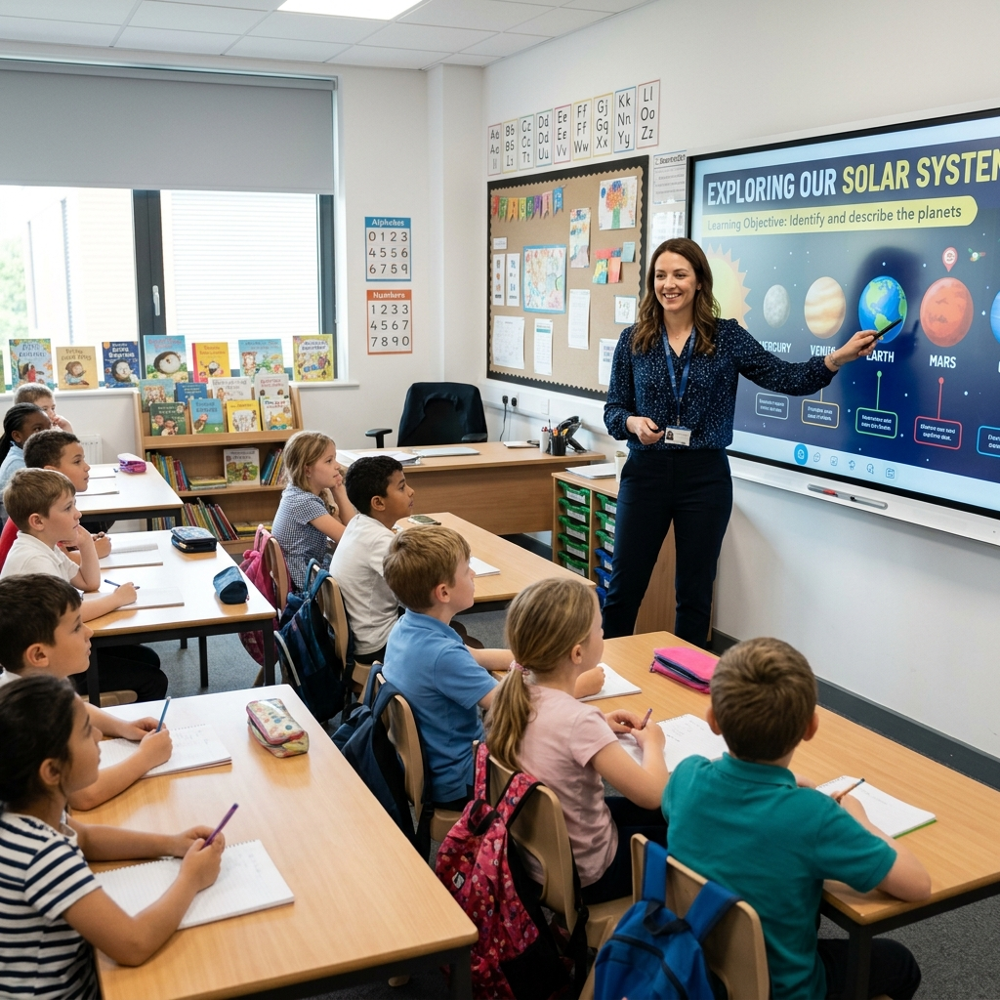